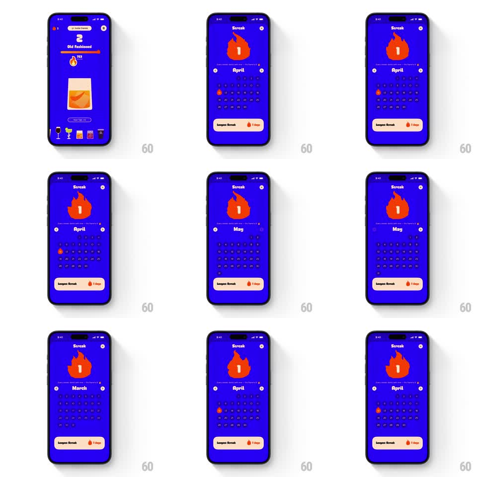

Media
Frame-by-frame

Rebuild this animation 1:1: BurnBar's streak screen - an orange flame with the streak count flickers idly on a blue field, the streak sheet springs up from the bottom, and the month calendar snaps between months with fast slide transitions.

Rebuild this animation 1:1: BurnBar's streak screen - an orange flame with the streak count flickers idly on a blue field, the streak sheet springs up from the bottom, and the month calendar snaps between months with fast slide transitions. ## Integration Integration: stack-agnostic spec - springs given as stiffness/damping, timed motions as duration + curve; map every value to your framework and animation library of choice. ## Scene "Streak" sheet over the drink-tracking home. Top: big orange flame icon carrying the streak number. Middle: month label with arrows and a weekday calendar grid; streaked days show a small flame. Bottom: a cream "Longest Streak" card with a flame glyph and day count. ## Motion spec Pattern: springy bottom-sheet entrance, idle flame flicker, and snappy month paging. - Sheet entrance: the panel slides up (translate 60% -> 0, 400ms, spring ~280/24) with a single soft bounce. - Flame idle: the flame flickers continuously (scaleX/scaleY +/- 6% and skew +/- 3deg at ~6Hz, randomized), streak number stays rock solid inside it. - Month paging: tapping an arrow slides the grid horizontally (translate 100% -> 0, 250ms, ease-out) while the month label crossfades (150ms); direction follows the arrow. - The Longest Streak card stays pinned and static during paging. ## Calibration - The flame's flicker is organic noise, not a metronome - vary the timing. - Month transitions are quick snaps; no long scrolling between months. ## Reduced motion Sheet fades in at final position (200ms); flame renders static; month change crossfades (150ms). ## Don't miss - The streak number inside the flame never wobbles - only the flame body does. - Streaked days use the flame glyph, not a dot or check.